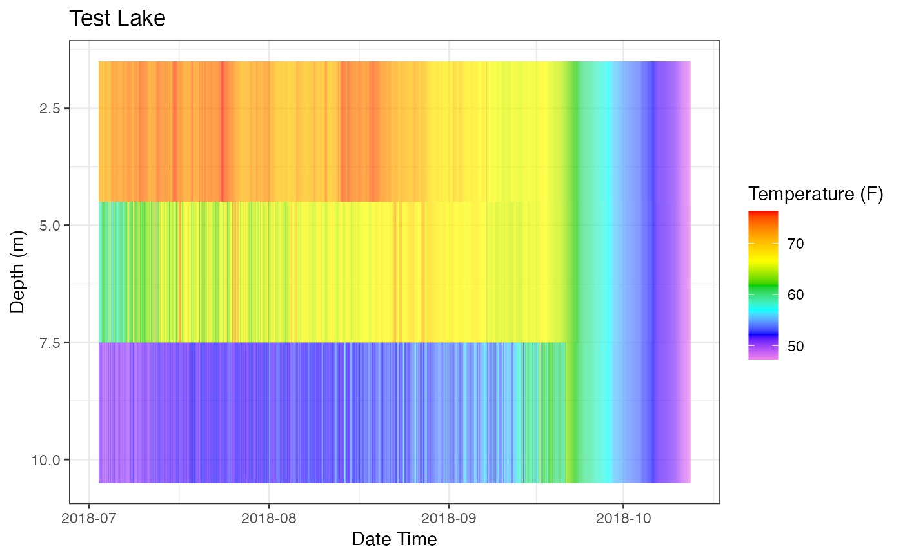

Generates a heat map plot of measurements from depth profile data
plot_heatmap( data, col_datetime, col_depth, col_measure, lab_datetime = NA, lab_depth = NA, lab_measure = NA, lab_title = NA, contours = TRUE, line_val = NA )
| data | data frame of site id (optional), data/time, depth , and measurement (e.g., temperature). |
|---|---|
| col_datetime | Column name, Date Time |
| col_depth | Column name, Depth |
| col_measure | Column name, measurement for plotting |
| lab_datetime | Plot label for x-axis, Default = col_datetime |
| lab_depth | Plot label for legend, Default = col_depth |
| lab_measure | Plot label for y-axis, Default = col_measure |
| lab_title | Plot title, Default = NA |
| contours | Boolean to draw contours, Default = TRUE |
| line_val | Measurement value at which to draw a line, Default = NA |
a ggplot object
Can be used with any parameter. A plot is returned that can be saved with ggsave(filename).
Labels (and title) are function input parameters. If they are not used the plot will not be modified.
The default theme is theme_bw().
The plot is created with ggplot2::geom_tile().
The returned object is a ggplot object so it can be further manipulated.
# Data (Test Lake) data <- laketest # Column Names col_datetime <- "Date.Time" col_depth <- "Depth" col_measure <- "temp_F" # Plot Labels lab_datetime <- "Date Time" lab_depth <- "Depth (m)" lab_measure <- "Temperature (F)" lab_title <- "Test Lake" line_val <- 2 # Create Plot p_hm <- plot_heatmap(data = data , col_datetime = col_datetime , col_depth = col_depth , col_measure = col_measure , lab_datetime = lab_datetime , lab_depth = lab_depth , lab_measure = lab_measure , lab_title = lab_title , contours = TRUE) # Print Plot print(p_hm)# Demo ability to tweak the plot p_hm + ggplot2::labs(caption = "Example, LakeMonitoR::plot_heatmap()")#> [1] "/var/folders/24/8k48jl6d249_n_qfxwsl6xvm0000gn/T//Rtmpk075is"#>